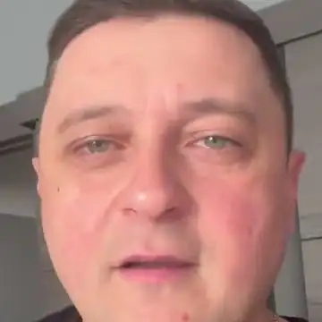
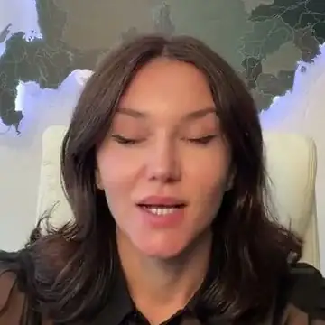
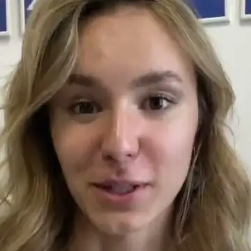
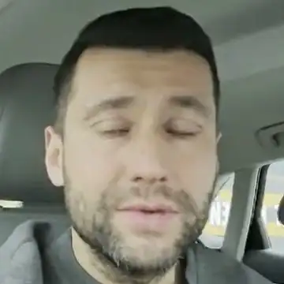

Как представить Альберта
Короткий вариант, одной фразой:
Альберт Валеев, предприниматель, основатель компании neovida.ai, практик внедрения искусственного интеллекта в бизнес.
Полный вариант, на 30 секунд:
Альберт Валеев, предприниматель с двадцатилетним опытом, основатель компании neovida.ai и школы ИИ. На его счету более 20 проектов внедрения искусственного интеллекта в бизнес, а по его методике «ИИ-мышление» больше двух тысяч человек научились думать вместе с ИИ. Обучает команды компаний и госструктур, в том числе Минцифры и МФЦ Башкортостана. Автор и ведущий передачи «ИИ. Новая реальность» на радио «Комсомольская правда».
Альберт в цифрах
человек научились работать с ИИ по его методике «ИИ-мышление»
проектов внедрения искусственного интеллекта в бизнес
в предпринимательстве, девять собственных бизнесов
его франчайзинговая сеть: 67 в России и 10 в Казахстане
компаний обучили у него своих сотрудников в 2026 году
образовательная, Министерство просвещения РБ
на телеканалах «Вся Уфа» и «Башкортостан 24»
своя передача на радио «Комсомольская правда»
Чем занимается
Авторские курсы «ИИ. Новая реальность» (очно в Уфе и онлайн) и «AI Цех». Больше 2000 человек научились думать вместе с ИИ
Обучение команд компаний под их задачи: 7 компаний закрытыми группами в 2026, ещё 12+ отправили сотрудников в открытые потоки
Больше 20 проектов: аудит, стратегия, обучение команды, ИИ-агенты в продажах, финансах, найме, документах и сервисе
Занятие для руководства Минцифры РБ, мастер-класс для руководителей МФЦ РБ, благодарственное письмо министра цифрового развития РБ
Принципы, смыслы, сценарии и только потом инструменты. Рынок учит кнопкам, здесь учат думать вместе с ИИ
ООО «НЕОВИДА», № Л035-01198-02/04299563 от 04.02.2026, Министерство просвещения Республики Башкортостан
Телевидение и радио
Телевидение


Радио «Комсомольская правда», Уфа, 98,3 FM
Посмотреть за минуту
Темы выступлений
- ИИ не конкурент, а союзникСтратегия внедрения ИИ для бизнеса: с чего начать и куда не тратить деньги
- ИИ-мышлениеКак собственнику и команде думать вместе с ИИ, а не нажимать кнопки
- Своя команда ИИАссистенты и агенты, которые работают на компанию каждый день
- Цифровой РОПКак ИИ разбирает каждый звонок и показывает, где теряются продажи
- Три этапа ИИ в компанииОт первых запросов сотрудников до агентов в процессах
- Картина 2027Каким станет бизнес и сотрудник и к чему готовить компанию сейчас
- Как перестать бояться ИИИ начать с понедельника: первые шаги для руководителя и команды
- Думать с ИИ и не поглупетьГде ИИ усиливает человека, а где делает его слабее
- ИИ как экзоскелет руководителяЛичная эффективность собственника: почта, встречи, документы, решения
- ИИ для госсектора и сервисаКак массово обучать команды и встраивать ИИ в работу с людьми
Форматы
Практика на задачах участников: каждый уходит со схемами, готовыми запросами и первым шагом для своей компании
Одна большая мысль, живые примеры и демонстрация ИИ-сотрудников в работе
Эксперт или модератор разговора про ИИ в бизнесе и госсекторе
Что говорят выпускники

«Моя эффективность увеличилась, наверное, процентов на 30, это точно. А я уже оправдал свои вложения, наверное, раз в 20–25.»
Смотреть видеоотзыв
«Мой ассистент производит глубокое исследование рынка… Я бы раньше потратила на это несколько дней. А он это делает в течение 10–15 минут.»
Смотреть видеоотзыв
«То, что занимало у меня около пяти часов… занимает всего 15–20 минут. Для своей команды я создала агентов, ботов, ассистентов.»
Смотреть видеоотзыв
«Я думаю, что ни одна компания в ближайшей перспективе не обойдётся без этого.»
Смотреть видеоотзывЛицензия и благодарность